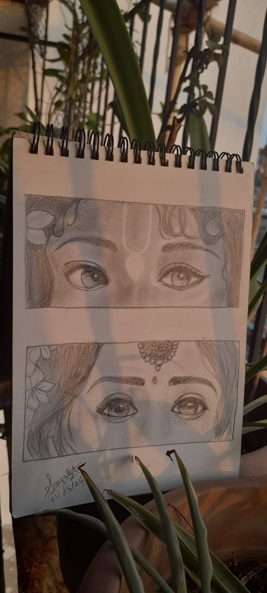
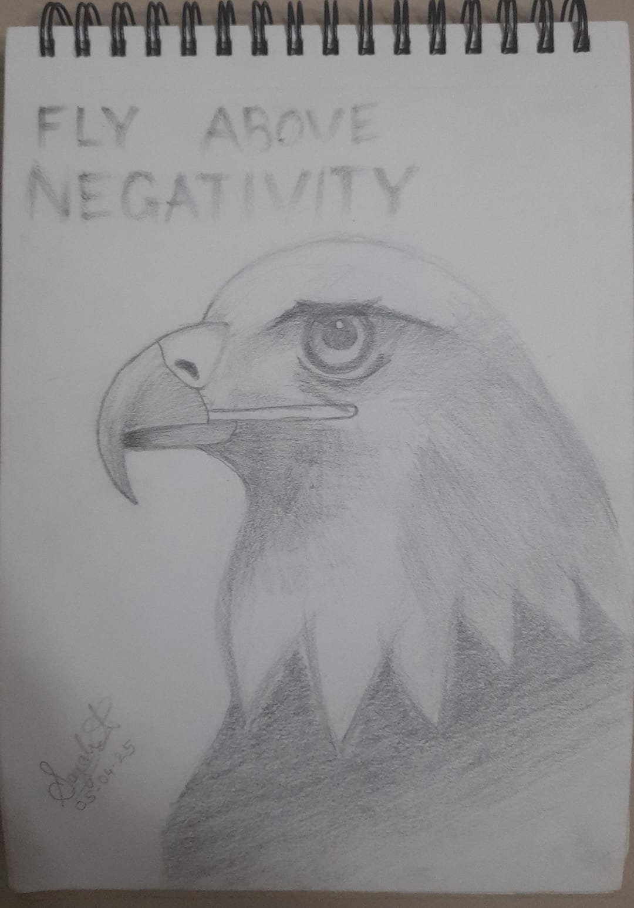
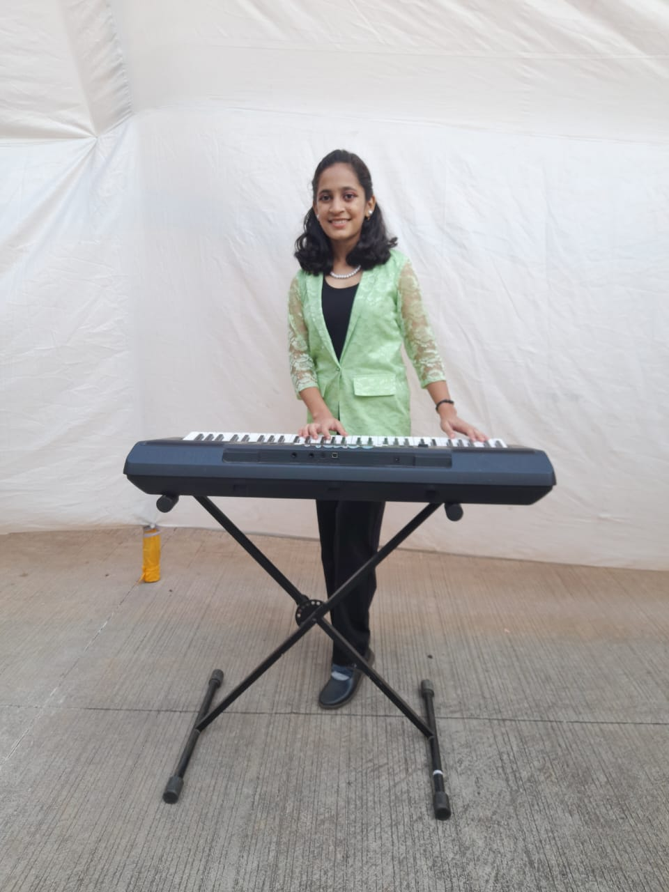
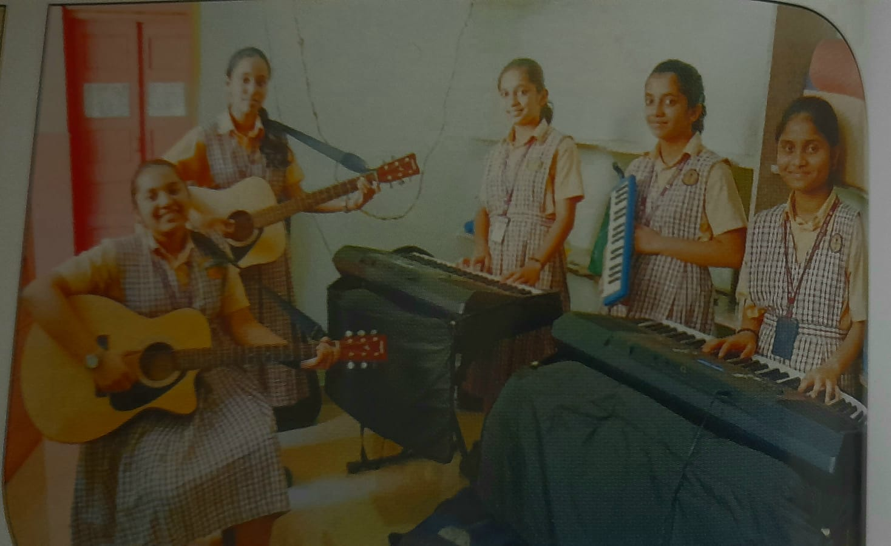

Here are some of my hobbies and interests represented visually and descriptively.




*Amidst the Rush*
In the rush of a fast life each one of us stops and stares at the small things that make us happy. It symbolizes how easily can happiness be found if we just stop by and notice. Birds fluttering early morning, flowers blooming amongst the dew, the sun shining over the river, etc are the things that are the most simple yet the most mesmerizing of all. There are sometimes we miss the previous versions of ourselves just by looking at some people. We feel nostalgic about the self we had and get a feeling that this is how I was. Sometimes when we see a happy family picnic or a group of friends just having fun around, it just clicks to us about how precious those moments are. We know the value of those moments because we've lived the moments and it all feels too far away now. The way we rush to achieve our goals makes us forget all the good things around us. We are so busy chasing our future selves that we tend to forget that our past self has been chasing the version we have of ourselves today. Ofcourse we need to rush to cope up with the world, but not always. Sometimes we should make time for the ones we care about, for the things we love and admire. The people we have in our life right now might or might not be a part of the life we go ahead with. Whenever talking with an elderly person they tell us that in the end we all have remaining to do is nothing but just stop and let the remaining life go according to the flow. They value the people in their life the most that's the reason reason they seem the most caring. Do we really understand the meaning of life when death sits next to us and the value of people when we know we don't have much time with them ahead. So why not just acknowledge te gems we have today before they are lost. All we need to do is stop and give time to the things we have today. Tomorrow's never a fixed day but today is, live it and make the past self realize how forward we've come with all the struggles we had. 😁
Mumbai
Widely known as the city that never sleeps,
With skyscrapers too high and the sea too deep.
A unique lifeline that's always too crowded,
Still teaches to live when feel lost and stranded
Where every Stanger is a known one,
Dreams are woven, battles fought, and won.
The lights may blind, the noise may roar,
Yet hope keeps knocking on every door.
A melting pot of stories untold,
Of fleeting moments and courage bold.
It breaks, it heals, it makes you strong,
In its chaos, you still belong.
Mumbai’s spirit forever flies.
In every struggle, in every cheer,
The heartbeat of the city is clear.
It teaches us to rise, to strive,
In its rhythm, we come alive.